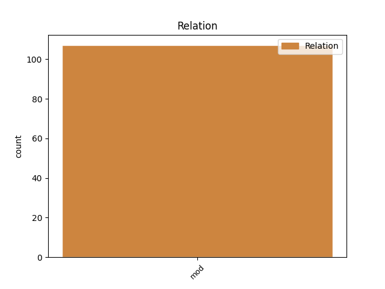
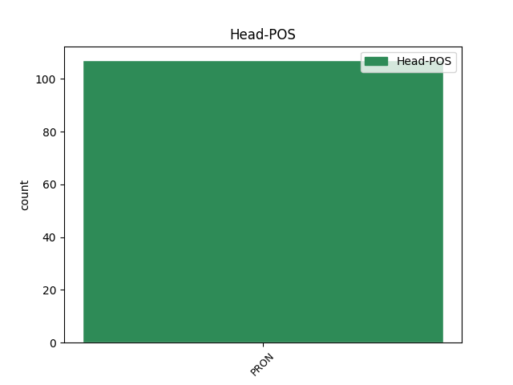
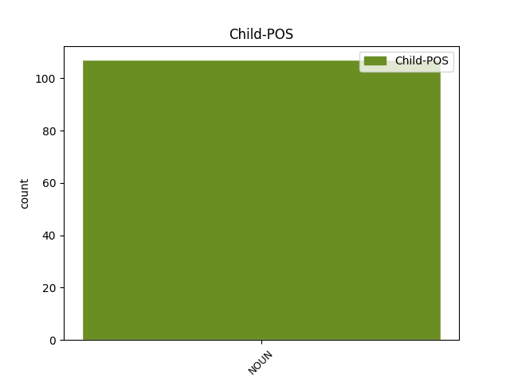

Distribution of features within this leaf



Agreement Rules sorted by frequency.
- When the dependent token is the modifer(mod) of the head token, and the head token is PRON and the dependent token is NOUN.
1 Se se PRON Pron,Dem,Sg,Nom Case=Nom|Number=Sing|PronType=Dem 0 _ _ _
2 saa _ _ _ _ 0 _ _ _
3 kyllä _ _ _ _ 0 _ _ _
4 helpolla _ _ _ _ 0 _ _ _
5 leipänsä _ _ _ _ 0 _ _ _
6 se _ _ _ _ 0 _ _ _
7 jätkä jätkä NOUN N,Sg,Nom Case=Nom|Number=Sing 1 mod _ _
8 loppujen _ _ _ _ 0 _ _ _
9 lopuksi _ _ _ _ 0 _ _ _
10 jumalauta _ _ _ _ 0 _ _ _
11 . _ _ _ _ 0 _ _ _
Disagree Examples:
1 Toi _ _ _ _ 0 _ _ _
2 ihmettelee _ _ _ _ 0 _ _ _
3 välillä _ _ _ _ 0 _ _ _
4 että _ _ _ _ 0 _ _ _
5 m- _ _ _ _ 0 _ _ _
6 nukun _ _ _ _ 0 _ _ _
7 selkä selkä NOUN N,Sg,Nom Case=Nom|Number=Sing 8 mod _ _
8 häneem hän PRON Pron,Pers,Sg3,Ill Case=Ill|Number=Sing|Person=3|PronType=Prs|Style=Coll 0 _ _ _
9 päin _ _ _ _ 0 _ _ _
1 Tupakointi _ _ _ _ 0 _ _ _
2 esimerkiks _ _ _ _ 0 _ _ _
3 meillä me PRON Pron,Pers,Pl1,Ade Case=Ade|Number=Plur|Person=1|PronType=Prs 0 _ _ _
4 koulussa koulu NOUN N,Sg,Ine Case=Ine|Number=Sing 3 mod _ _
5 alko _ _ _ _ 0 _ _ _
6 jossaiv _ _ _ _ 0 _ _ _
7 viidennellä _ _ _ _ 0 _ _ _
8 ja _ _ _ _ 0 _ _ _
9 kuudennella _ _ _ _ 0 _ _ _
10 luokalla _ _ _ _ 0 _ _ _
11 , _ _ _ _ 0 _ _ _
12 viinan _ _ _ _ 0 _ _ _
13 käyttö _ _ _ _ 0 _ _ _
14 , _ _ _ _ 0 _ _ _
15 normaalisti _ _ _ _ 0 _ _ _
16 jossain _ _ _ _ 0 _ _ _
17 seitsemännellä _ _ _ _ 0 _ _ _
18 , _ _ _ _ 0 _ _ _
1 Et _ _ _ _ 0 _ _ _
2 Soiliki _ _ _ _ 0 _ _ _
3 oli _ _ _ _ 0 _ _ _
4 jättäny _ _ _ _ 0 _ _ _
5 sinne _ _ _ _ 0 _ _ _
6 jotaki _ _ _ _ 0 _ _ _
7 omia _ _ _ _ 0 _ _ _
8 tavaroita _ _ _ _ 0 _ _ _
9 ja _ _ _ _ 0 _ _ _
10 , _ _ _ _ 0 _ _ _
11 sit _ _ _ _ 0 _ _ _
12 se _ _ _ _ 0 _ _ _
13 toinen _ _ _ _ 0 _ _ _
14 niist _ _ _ _ 0 _ _ _
15 tytöistä _ _ _ _ 0 _ _ _
16 , _ _ _ _ 0 _ _ _
17 toi _ _ _ _ 0 _ _ _
18 osan osa NOUN N,Sg,Gen Case=Gen|Number=Sing 19 mod _ _
19 niistä ne PRON Pron,Dem,Pl,Ela Case=Ela|Number=Plur|PronType=Dem 0 _ _ _
20 Soilille _ _ _ _ 0 _ _ _
21 . _ _ _ _ 0 _ _ _
1 Heissä _ _ _ _ 0 _ _ _
2 on _ _ _ _ 0 _ _ _
3 jotakin _ _ _ _ 0 _ _ _
4 samaa sama PRON Pron,Qnt,Sg,Par Case=Par|Number=Sing|PronType=Ind 0 _ _ _
5 , _ _ _ _ 0 _ _ _
6 terävä _ _ _ _ 0 _ _ _
7 lintumainen _ _ _ _ 0 _ _ _
8 olemus olemus NOUN N,Sg,Nom Case=Nom|Number=Sing 4 mod _ _
9 . _ _ _ _ 0 _ _ _
1 Kun _ _ _ _ 0 _ _ _
2 tässä _ _ _ _ 0 _ _ _
3 lähdettiin _ _ _ _ 0 _ _ _
4 liikkeelle _ _ _ _ 0 _ _ _
5 ja _ _ _ _ 0 _ _ _
6 puhuttiin _ _ _ _ 0 _ _ _
7 siitä _ _ _ _ 0 _ _ _
8 mikäs mikä PRON Pron,Interr,Sg,Nom,S Case=Nom|Clitic=S|Number=Sing|PronType=Int 0 _ _ _
9 , _ _ _ _ 0 _ _ _
10 on _ _ _ _ 0 _ _ _
11 käytännössä käytäntö NOUN N,Sg,Ine Case=Ine|Number=Sing 8 mod _ _
12 , _ _ _ _ 0 _ _ _
13 se _ _ _ _ 0 _ _ _
14 , _ _ _ _ 0 _ _ _
15 niinkun _ _ _ _ 0 _ _ _
16 se _ _ _ _ 0 _ _ _
17 tavoite _ _ _ _ 0 _ _ _
18 meillä _ _ _ _ 0 _ _ _
19 , _ _ _ _ 0 _ _ _
20 niin _ _ _ _ 0 _ _ _
21 se _ _ _ _ 0 _ _ _
22 oli _ _ _ _ 0 _ _ _
23 kai _ _ _ _ 0 _ _ _
24 , _ _ _ _ 0 _ _ _
25 mää _ _ _ _ 0 _ _ _
26 määrittelin _ _ _ _ 0 _ _ _
27 sen _ _ _ _ 0 _ _ _
28 lukijaksi _ _ _ _ 0 _ _ _
29 kasvaminen _ _ _ _ 0 _ _ _
30 . _ _ _ _ 0 _ _ _